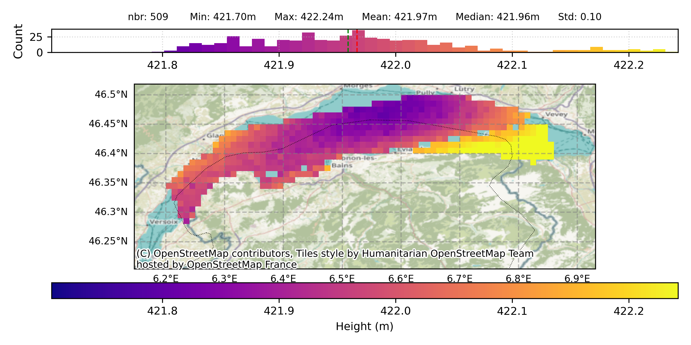
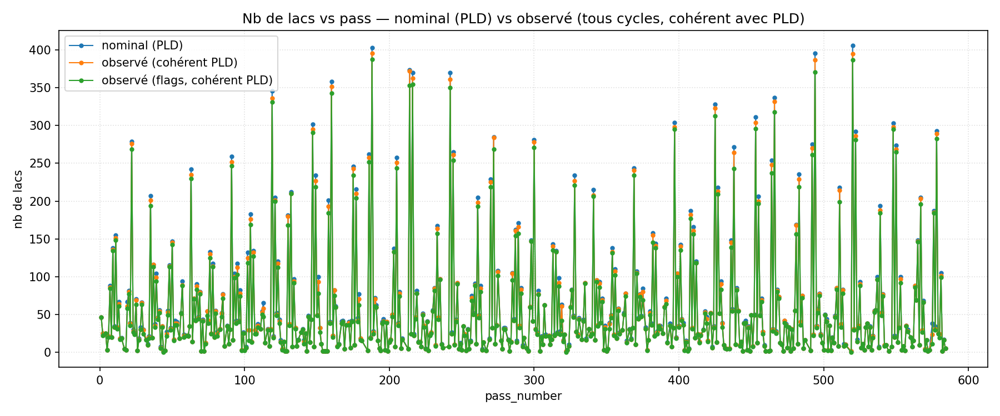
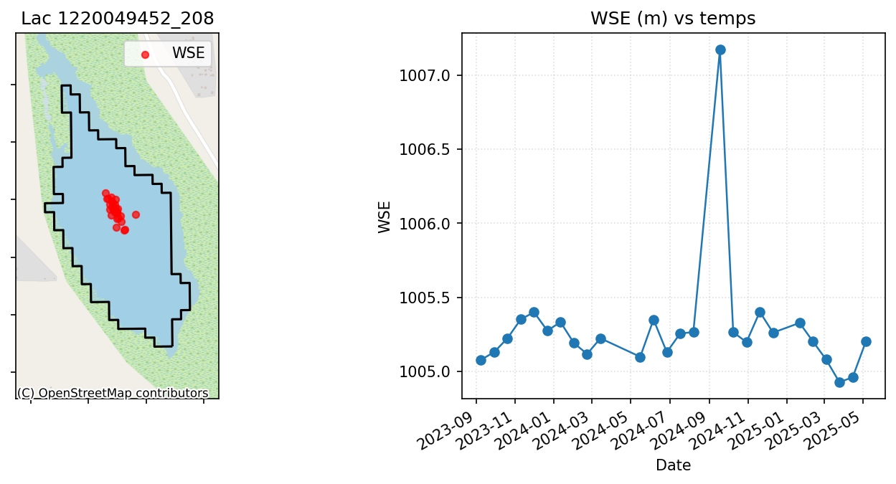
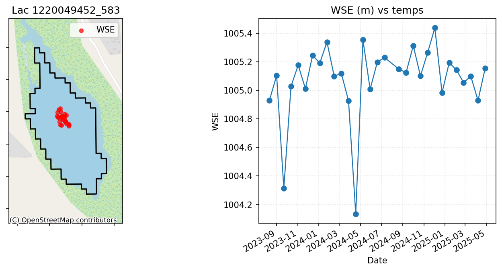
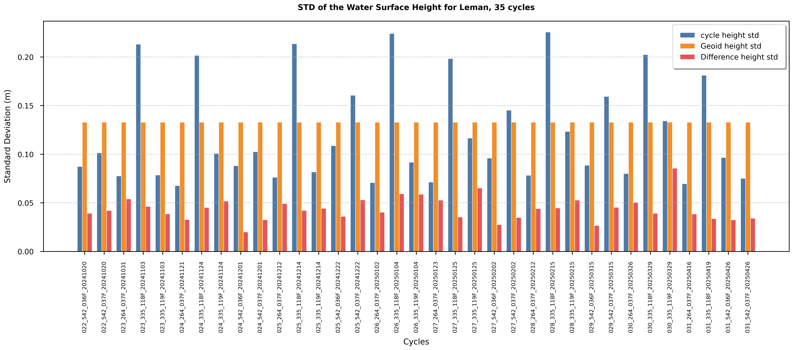
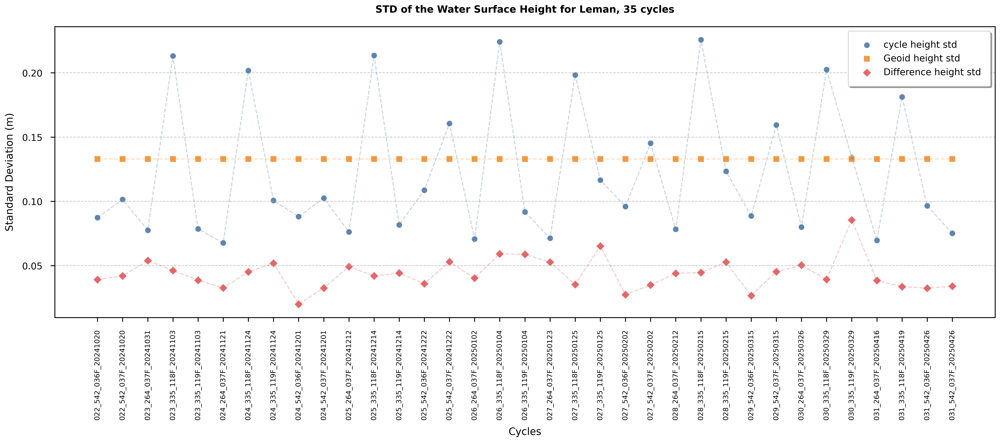
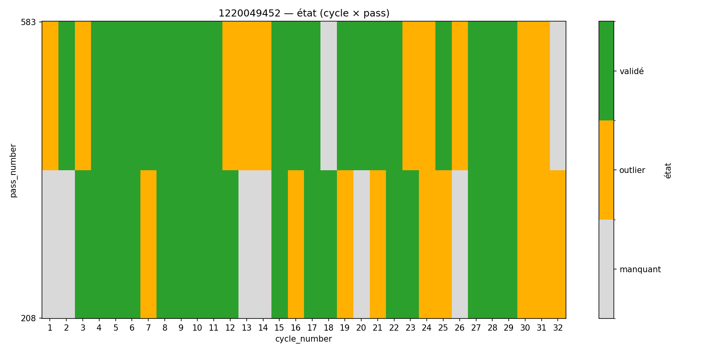
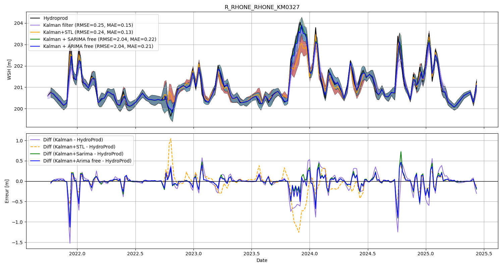

SWOT hydrology: lake surfaces, quality monitoring & time-series modelling
Since April 2025, my work at CLS has focused on extracting reliable hydrological information from SWOT and Sentinel altimetry through scientific algorithms, automated data-quality monitoring and validated time-series methods.

From SWOT KaRIn measurements to a mean lake surface
I develop a method to estimate mean lake surfaces from high-resolution SWOT KaRIn observations. The objective is to reconstruct a stable two-dimensional water surface, approximately parallel to the geoid, in order to better characterise inter-track biases in nadir radar altimetry and reduce the impact of local limitations in existing geoid models.
The processing uses SWOT high-resolution raster data, aggregates repeated observations to kilometre-scale cells, filters anomalous measurements and derives quality indicators and statistical diagnostics. The resulting surfaces can then be compared with independent references such as ICESat-2 profiles, GNSS measurements and Hydroweb products to assess their consistency and their potential contribution to more stable lake-level time series.

CCI lake products: LWL / LWE NetCDF generation
In parallel, I contribute to a complete processing pipeline for the generation of CCI-format NetCDF products containing Lake Water Level (LWL) and Lake Water Extent (LWE) information. The workflow produces one two-dimensional latitude/longitude file per day and integrates Hydroweb information into the required CCI structure.
The pipeline handles specific cases such as the North, South, East and West Aral Sea components, inserts non-observed lakes with the agreed default value, and includes validation routines for file counts, variable names, time-series consistency and CF compliance. Post-processing tools can correct metadata and structural issues detected by CF-checker without requiring the full production chain to be rerun.
Monitoring SWOT lake observations at scale
I developed an automated monitoring workflow to evaluate the quality and completeness of SWOT lake-altimetry observations. The first large-scale configuration targets approximately 10,000 stable lakes selected using ICESat-2 information, latitude constraints and lake area, and processes the observations efficiently with Python and Dask.
The monitoring compares nominal lake/pass visibility from the Prior Lake Database with actual SWOT observations, identifies missing measurements and expected-but-absent passes, applies quality flags, and detects outliers from spatial and temporal signatures. Diagnostics are generated by lake, pass and cycle so that recent observations can be reviewed quickly and systematically.

Lake- and pass-level diagnostics


Statistical quality indicators



Improving hydrological time series with Kalman filtering
I also work on improving hydrological lake and river time series by implementing and validating advanced filtering methods. A central part of this study is the Kalman-filter approach used in DAHITI, which serves as a reference method for measuring the gain obtained by alternative modelling strategies.
The work includes automatic optimisation of noise parameters and the evaluation of predictive components based on STL, ARIMA and SARIMA. The resulting series are compared against Hydroweb and DAHITI references and, where available, validated with in-situ measurements. Performance is assessed using quantitative indicators such as RMSE and MAE, together with a detailed examination of periods where the methods diverge.
